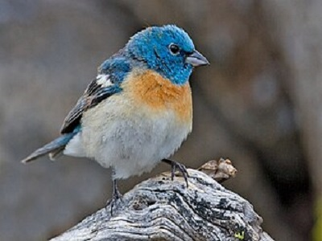

Madarak
A madarak (Aves) a gerinces állatok törzsének egy osztálya. Testüket toll borítja, mellső végtagjaik szárnyakká alakultak, és többségük képes a repülésre. Csőrrel rendelkeznek, fogaik nincsenek. Melegvérű állatok, tojással szaporodnak. A tudomány jelenlegi állása szerint több mint 10 000 fajuk ismert világszerte. A madarak osztályán belül több nagyobb csoport különíthető el, például:
- futómadarak (Struthioniformes és rokon rendek)
- ragadozó madarak (Accipitriformes, Falconiformes)
- énekesmadarak (Passeriformes)
- vízimadarak (Anseriformes és más rendek)

Futómadarak
A futómadarak olyan madarak, amelyek elvesztették repülőképességüket. Szárnyaik csökevényesek, erős lábaik viszont alkalmassá teszik őket a gyors futásra. Ide tartozik például a strucc, az emu és a nandú. Főként a déli féltekén élnek.
Wikipedia
Ragadozó madarak
A ragadozó madarak erős csőrrel és éles karmokkal rendelkező madarak, amelyek más állatokkal táplálkoznak. Kiváló látásuk segíti őket a zsákmányszerzésben. Ide tartoznak többek között a sasok, sólymok, héják és baglyok.
Wikipedia
Énekesmadarak
Az énekesmadarak a legnépesebb madárrend, több ezer faj tartozik ide. Jellemzőjük a fejlett hangképző szerv, amely lehetővé teszi a változatos éneklést. Ide tartozik például a feketerigó, a cinege és a pacsirta.
Wikipedia
Vízimadarak
A vízimadarak vízhez kötött életmódot folytató madarak. Sok fajuk úszóhártyás lábbal rendelkezik, amely segíti őket az úszásban. Ide tartoznak a kacsák, ludak, hattyúk és sirályok.
Wikipedia